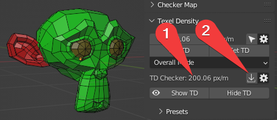
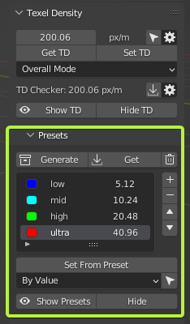

Texel Density
Panel

Warning
- Texel Density System uses Vertex Color for displaying some information. Make sure viewport shading is switched to Solid mode.
Texel Density
- Shows Texel Density value.
Preferences

- Units - Texel density calculation units.
- Texture Size - Image Size for Texel Density computation.
Get TD
- Get Texel Density from selected Islands.
Set TD
- Set Texel Density to selected Islands.
Set TD Mode
- Mode for setting Texel Density.
TD Checker

- Texel Density value used for Show TD operation.
- Copy Current TD value to TD Checker value (point 1).
Preferences

-
TD Checker - Texel Density value used for Show TD operation.
-
Less - Viewport display color to represent Texel Density less than TD Checker value.
-
Equal - Viewport display color to represent Texel Density equal to TD Checker value.
-
Over - Viewport display color to represent Texel Density over than TD Checker value.
Show TD
- Display Texel Density in Viewport by chosen TD Checker value and colors.
Hide TD
- Disable displaying Texel Density in Viewport by chosen TD Checker value and colors.
Texel Density Presets

Generate
- Generate most general Presets.
Get
- Get TD from selected Islands to active preset.
Clear
- Clear List
Set From Preset
- Set TD from active preset to selected Islands.
Select by TD
- Select Islands By Texel Density

Show Presets
- Turn on Presets Displaying.
Hide
- Turn off Presets displaying.